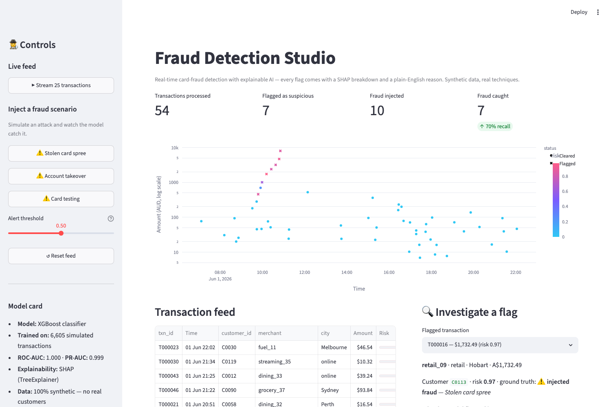
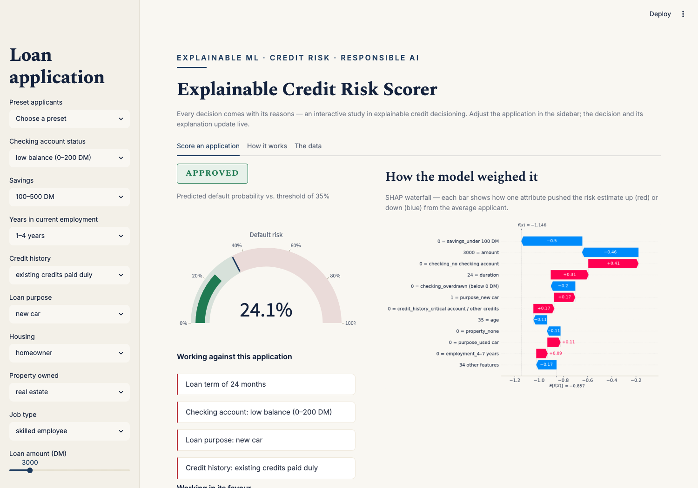
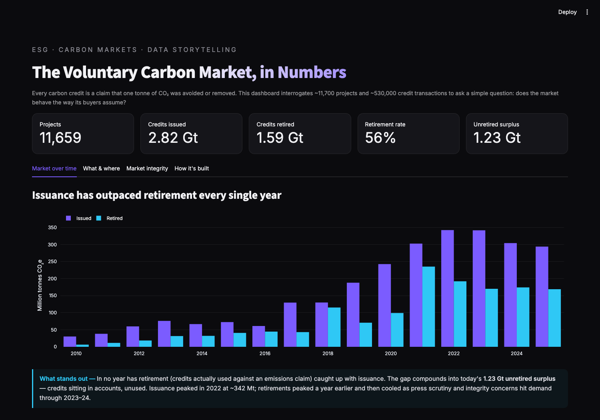
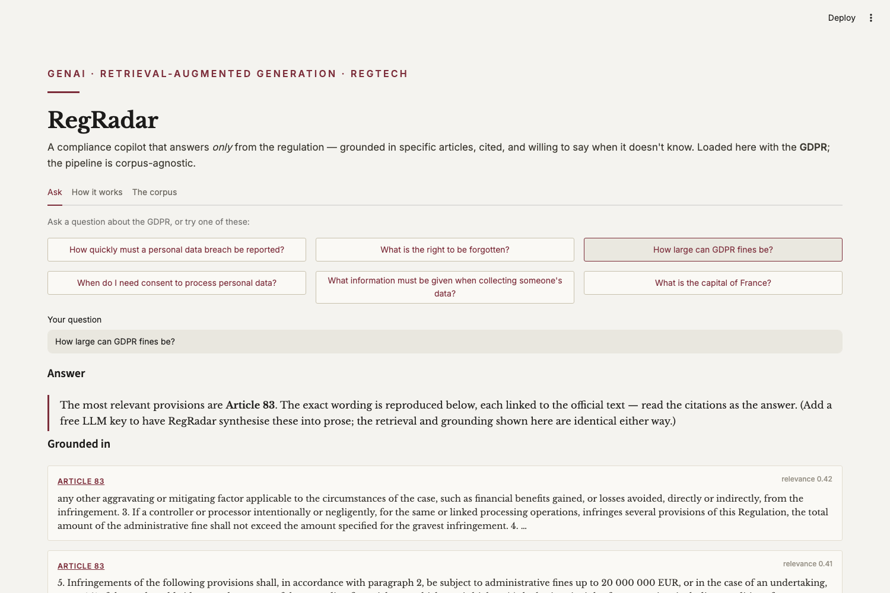
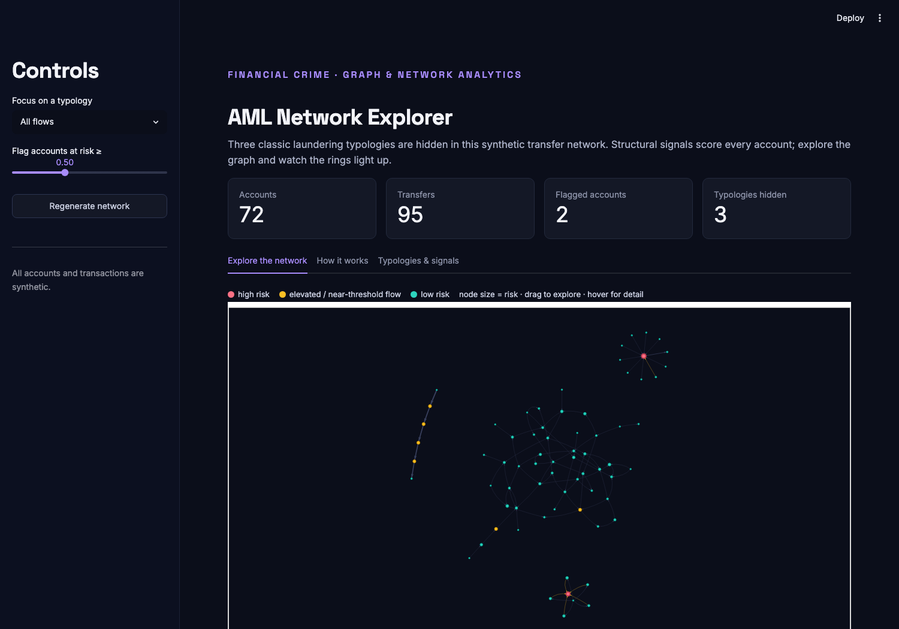
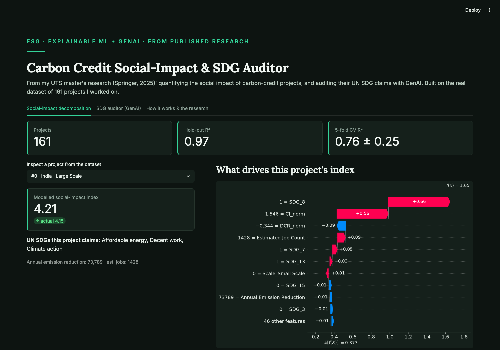

Explainable ML · Fraud Detection
Fraud Detection Studio
Real-time card-fraud detection with explainable AI. A live synthetic transaction feed is
scored by XGBoost; every flag comes with a SHAP waterfall and a plain-English reason.
Inject a stolen-card spree, an account takeover or a card-testing attack — and watch
the model catch it.
- Python
- XGBoost
- SHAP
- Streamlit
- Plotly
100% synthetic data, generated in-repo — patterns modelled on
PaySim and
IEEE-CIS Fraud Detection.

Explainable ML · Credit Risk
Explainable Credit Risk Scorer
Every credit decision comes with its reasons. Fill in a loan application and get an
instant approve/decline with a SHAP waterfall, plain-English reasons for and against,
and guidance on what would change the outcome. Sex and nationality are deliberately
excluded from the model — fairness by design.
- Python
- XGBoost
- SHAP
- Streamlit
- Responsible AI
Trained on the
UCI German Credit dataset
(1,000 anonymised loan applications).

Data Analysis · ESG
Voluntary Carbon Market Analytics
A data-storytelling dashboard on ~11,700 carbon-offset projects and ~530,000 credit
transactions: issuance outpacing retirement every year, a 1.2 Gt unretired surplus,
project-type and registry concentration, and who actually retires credits. Ties to my
research on carbon-credit quality and UN SDG verification.
- Python
- pandas
- Plotly
- Streamlit
- Data storytelling
Built on the
CarbonPlan OffsetsDB
(seven voluntary registries).

GenAI · Retrieval-Augmented Generation
RegRadar — Compliance Copilot
A RAG copilot that answers only from the regulation — semantic retrieval over
the GDPR's 99 articles, every answer cited to a specific article, and a grounding
threshold that makes it refuse when a question isn't supported by the text.
Runs at zero cost; corpus-agnostic.
- Python
- RAG
- Embeddings
- Streamlit
- LLM (optional)
Built on the official
EUR-Lex GDPR text.

Financial Crime · Graph Analytics
AML Network Explorer
Money laundering is a structural problem, so this models transfers as a graph
rather than scoring transactions in isolation. Three classic typologies — structuring,
layering, fan-in collection — are hidden in a synthetic network; pass-through, fan-in
and near-threshold signals score every account, and the interactive graph lights up
the rings.
- Python
- NetworkX
- PyVis
- Graph analytics
- Streamlit
Synthetic money-flow network with labelled laundering typologies.

From My Published Research · Explainable ML + GenAI
Carbon Social-Impact & SDG Auditor
Two halves of my UTS master's research (Springer chapter, 2025) made interactive, on the
real dataset of 161 carbon-credit projects I worked on: an XGBoost model that decomposes
a project's social-impact index with SHAP, and the actual GPT-4 prompt ladder that audits
its UN SDG claims with reasoning.
- Python
- XGBoost
- SHAP
- GPT-4 / CoT prompting
- Streamlit
Real research data · underpins my Springer chapter on UN SDG verification.